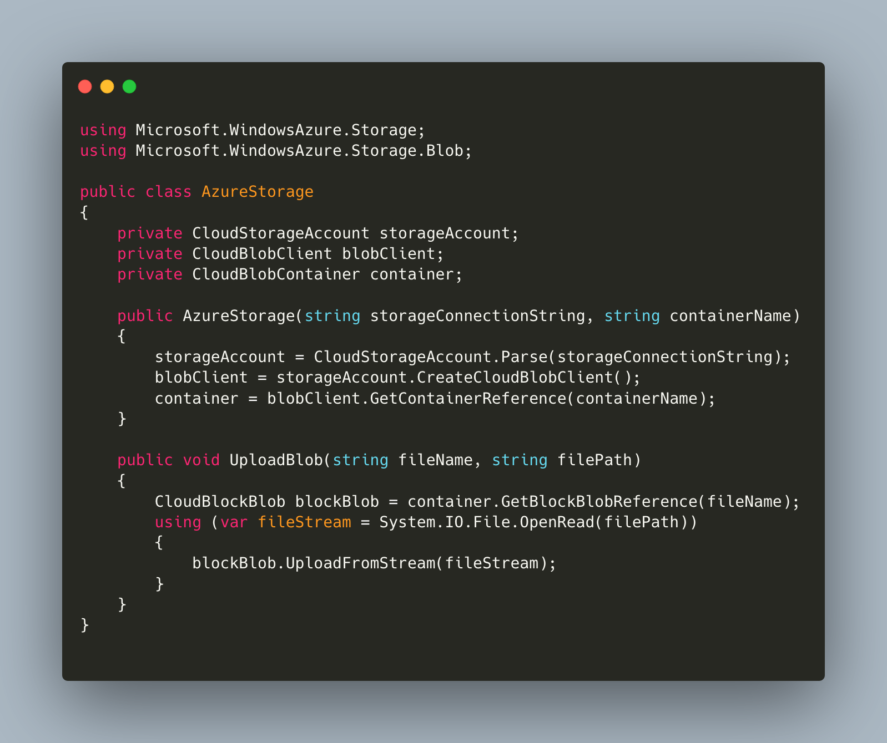

I am a software developer with four years of production experience and am seeking new opportunities in the field. I am a dedicated and passionate professional. I helped to create a corporate time-tracking solution that included web and desktop clients, a back-end solution written with C#, extensions for various browsers and a plugin for Jira for a Ukrainian product company. I was part of the team that improved the corporate expenses tracking system process for a client in the USA. I published several articles that helped more than 1000 developers in 2022. I'm skilled in computer programming in C# and Python and working in remote distributed teams.
Master's Degree in System Programming, National Aerospace University, Kharkiv, Ukraine (September 2017 – May 2019)
Bachelor's Degree in Computer Engineering, National Aerospace University, Kharkiv, Ukraine (September 2013 – May 2017)
This article explains the mechanism behind ahead-of-time compilation and discusses current trends in AoT in the .NET community. Also, some hands on approach with AWS was used to achieve a better understanding of the current state of the technolohgie.
Here is an innovative healthcare solution that I helped to create for the TestCompany in Ukraine in 2015.
In 2015, I worked on an exciting project for TestCompany, a healthcare company based in Ukraine. As a software developer, my primary responsibility was to design and implement a system that would help streamline the company's operations and improve patient care. Overall, this project was a valuable learning experience and allowed me to apply my skills in a real-world setting. In addition, it was an excellent opportunity to work with cutting-edge technology and positively impact the healthcare industry.